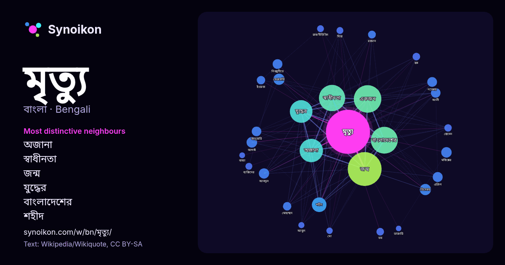

বাংলা · জনপ্রিয় শব্দ
মৃত্যু
“death” · উইকিপিডিয়া, Wikiquote থেকে 1167টি প্রয়োগে এর চারপাশে পাওয়া শব্দ।

সবচেয়ে স্বতন্ত্র প্রতিবেশী
- অজানা 104×
- স্বাধীনতা 76×
- জন্ম 64×
- যুদ্ধের 52×
- বাংলাদেশের 46×
- শহীদ 35×
- নিবন্ধটিতে 27×
- মস্তিষ্কের 25×
- আবদুল 18×
- একজন 17×
- ভয় 13×
- ফেব্রুয়ারি 12×
- আলী 12×
- মোহাম্মদ 12×
- মিয়া 12×
- ডিসেম্বর 11×
- আগস্ট 11×
- হক 11×
- মো 11×
- ইংরেজ 10×
× = সাধারণ উইকিপিডিয়া টেক্সটের চেয়ে কত গুণ বেশি।
সবচেয়ে ঘন ঘন প্রতিবেশী
- জন্ম 338
- একজন 224
- বাংলাদেশের 212
- স্বাধীনতা 203
- অজানা 161
- যুদ্ধের 151
- শহীদ 63
- ডিসেম্বর 37
- ফেব্রুয়ারি 37
- আগস্ট 33
- মস্তিষ্কের 32
- আবদুল 31
- এপ্রিল 29
- মার্চ 29
- নভেম্বর 28
- নিবন্ধটিতে 28
- আলী 27
- জানুয়ারি 27
- জীবন 26
- সেপ্টেম্বর 26
প্রসঙ্গে
- ক্ষেত্রেই মৃত্যু অনিবার্য। কিছু জীব জৈবিকভাবে অমর, যেমন Turritopsis dohrnii। কিন্তু তাদের ক্ষেত্রে জরাগ্রস্ততা ব্যতীত অন্যান্য কারণে মৃত্যু হতে পারে। Wikipedia snippets · মৃত্যু
- সেপ্টেম্বর ২০১৮।[স্থায়ীভাবে অকার্যকর সংযোগ] চলচ্চিত্র প্রবেশদ্বার বাংলা মুভি ডেটাবেজে সত্যের মৃত্যু নেই ইন্টারনেট মুভি ডেটাবেজে সত্যের মৃত্যু নেই (ইংরেজি) Wikipedia snippets · সত্যের মৃত্যু নেই
- আঘাত (ischemic injury)। উইকিঅভিধানে ডাক্তারি মৃত্যু শব্দটি খুঁজুন। মৃত্যু মস্তিষ্কের মৃত্যু আইনি মৃত্যু হৃদ্যন্ত্রের ক্রিয়া বন্ধ হওয়া গভীর অবোষ্ণ সংবহন Wikipedia snippets · ডাক্তারি মৃত্যু
- মৃত্যু নিবন্ধটিতে ২০১৯ সালে মৃত্যুবরণ করছেন এমন উল্লেখযোগ্য ব্যক্তিদের একটি তালিকা। নিবন্ধটিতে মাসের নামের অনুচ্ছেদে তারিখ আকারে উল্লেখযোগ্য মৃত্যু লিপিবদ্ধ Wikipedia snippets · ২০১৯-এ মৃত্যু
- কয়েকটি মৃত্যু উপন্যাসিক ও চলচ্চিত্রকার জহির রায়হানের রচিত একটি উপন্যাস। আমরা প্রতিদিনের জীবনে সবসময় হাজারও কাজের ভিড়ে মৃত্যুর বাস্তবতাকে ভুলে থাকি Wikipedia snippets · কয়েকটি মৃত্যু
- জন্ম ও মৃত্যু নিবন্ধন প্রকল্প শুরু করে। প্রকল্পটি স্থানীয় সরকার বিভাগের অধীনে রাখা হয়েছিল। এইসময় জন্ম ও মৃত্যু নিবন্ধন আইন ১৮৭৩ এবং জন্ম, মৃত্যু ও বিবাহ Wikipedia snippets · রেজিস্ট্রার জেনারেলের কার্যালয়, জন্ম ও মৃত্যু নিবন্ধন
- হয়।কিন্তু কোনো বইতে তার মৃত্যু তারিখ নেই তার অনেক অনুগামীই, বিশেষত বাংলায়, সেই সময় ঘটনাটা অস্বীকার করে, এবং এমনকি এখনো তার মৃত্যু সম্পর্কিত পরিস্থিতি এবং Wikipedia snippets · সুভাষচন্দ্র বসুর মৃত্যু
- লেলীন পোলানকোর মৃত্যু ঘটনাটি হল ২৭ বছর বয়সী আফ্রো-ল্যাটিনা রূপান্তরকামী মহিলা লেলীনের মৃত্যু। তিনি ২০১৯ সালের ৭ জুন রাইকার্স দ্বীপের নির্জন কারাগারে মারা Wikipedia snippets · লেলিন পোলানকোর মৃত্যু
আরও শব্দ
- অরণ্য
- আয়না
- ইতিহাস
- ঈশ্বর
- কাজ
- কুকুর
- ক্ষমতা
- খাদ্য
- গান
- গ্রীষ্ম
- ঘড়ি
- ঘণ্টা
- ঘোড়া
- ছায়া
- জননী
- জলবায়ু
- জীবন
- ঝড়
- টাকা
- ট্রেন
- দারুচিনি
- দ্বীপ
- নক্ষত্র
- নীরবতা
- পরিবার
- পানি
- পাহাড়
- প্রকৃতি
- বাগান
- বিজ্ঞান
- বিড়াল
- বৃষ্টি
- ভাষা
- মধু
- মরুভূমি
- মানচিত্র
- রাস্তা
- রুটি
- লবণ
- শরৎ
- শহর
- শিল্প
- শীত
- সত্য
- সময়
- সেতু
- সোনা
- স্বাস্থ্য
- হৃদয়
2026-10-09 তারিখে ডিফল্ট সেটিংসে (±5 শব্দ, মাঝারি কর্পাস) আগে থেকে গণনা করা। ইন্টারঅ্যাক্টিভ মানচিত্র লাইভ ডেটা দিয়ে এটি হালনাগাদ করতে পারে।
যন্ত্রে অনূদিত ইন্টারফেস; সংশোধন স্বাগত।